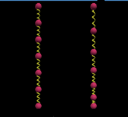

KineticsKit
VPython uzerine kurulu bir paket: KineticsKit. Bu paket kutleler ve yaylardan olusan sistemleri kurmayi iyice rahatlastiriyor, hatta kutlelerin uzerine mouse ile tiklanip hareket edilebilmelerine bile izin veriyor. Biz bu sistemi MIT OCW Hesapsal Bilim problemlerinden biri icin kullandik.
Iki ucu sabitlenmis du^2/dx^2 = 1 sisteminin ayriksal cozulmesi u(x) icin bir parabol ortaya cikartti (sistemin matematiksel detaylari MIT OCW Hesapsal Bilim Ders 1 sonunda). Bu parabol zincir halindeki bir kutle, yay sisteminde ortadaki kutlelerin daha fazla yer degistirmesi anlamina geliyordu. Bunun fiziksel olarak nasil gozukebilecegini gormek icin alttaki simulasyonu yaptik. Resmin sol tarafi once, sag tarafi yercekim etkisi sonrasi.
KineticsKit kurmak icin baglanti: http://kineticskit.sourceforge.net. Buradan zip indirilir, acilir ve
sudo mv KineticsKit /usr/lib/python2.7/dist-packages/
ile gereken yere kopyalanir, setup.py secenegi vermemisler, yani kurulumu elle yapmak gerekiyor. Ustteki simulasyon icin
from KineticsKit import *
from visual import vector
system = System(timestep=0.04, gravity=1)
mass1 = Mass(m=0.1, pos=(0.0, 0.0, 0.0), fixed=1)
mass2 = Mass(m=0.1, pos=(0.0, 0.5, 0.0))
mass3 = Mass(m=0.1, pos=(0.0, 1.0, 0.0))
mass4 = Mass(m=0.1, pos=(0.0, 1.5, 0.0))
mass5 = Mass(m=0.1, pos=(0.0, 2.0, 0.0))
mass6 = Mass(m=0.1, pos=(0.0, 2.5, 0.0))
mass7 = Mass(m=0.1, pos=(0.0, 3.0, 0.0), fixed=1)
system.insertMass(mass1)
system.insertMass(mass2)
system.insertMass(mass3)
system.insertMass(mass4)
system.insertMass(mass5)
system.insertMass(mass6)
system.insertMass(mass7)
spring1 = SingleHelixSpring(m0=mass1, m1=mass2, k=1, damping=0.5)
system.insertSpring(spring1)
spring2 = SingleHelixSpring(m0=mass2, m1=mass3, k=1, damping=0.5)
system.insertSpring(spring2)
spring3 = SingleHelixSpring(m0=mass3, m1=mass4, k=1, damping=0.5)
system.insertSpring(spring3)
spring4 = SingleHelixSpring(m0=mass4, m1=mass5, k=1, damping=0.5)
system.insertSpring(spring4)
spring5 = SingleHelixSpring(m0=mass5, m1=mass6, k=1, damping=0.5)
system.insertSpring(spring5)
spring5 = SingleHelixSpring(m0=mass6, m1=mass7, k=1, damping=0.5)
system.insertSpring(spring5)
loc_1 = [mass2.sphere.pos.y, mass3.sphere.pos.y,
mass4.sphere.pos.y, mass5.sphere.pos.y,
mass6.sphere.pos.y]
count = 0
while 1:
system.step()
count += 1
if count == 100: break
loc_2 = [mass2.sphere.pos.y, mass3.sphere.pos.y,
mass4.sphere.pos.y, mass5.sphere.pos.y,
mass6.sphere.pos.y]
from itertools import izip
for x,y in izip(loc_1, loc_2):
print x-y
SingleHelixSpring yay cesitlerinden bir tanesi, bir sure sonra sistemin durmasini istiyorsak surtunme eklemek gerekli, damping=0.5 bunun icin verildi. System olustururken gravity secenegi verilmezse sistem baslangic halinde kalir, tabii kullanici mouse ile kutleleri cekip cevirirse sistem buna gore kendini duzenliyor.
